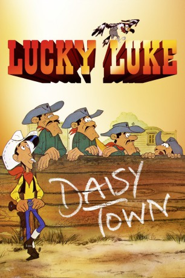
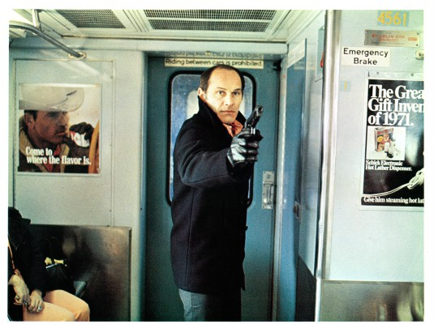

#4199 Lucky Luke - Daisy Town
Alternativ: Lucky Luke (Englischer Titel)
 
 IMDB-Wertung: 6.8 / 10
IMDB-Wertung: 6.8 / 10  Metascore: 0
Metascore: 0 
Damit in der kleinen Stadt Daisy Town, mitten in den weiten Ebenen des wilden Westens, wieder Ruhe und Ordnung einkehrt, muss ein Sheriff her, der die Schurken vertreiben kann. Zum Glück gibt es den tapferen Cowboy Lucky Luke, der schneller schießt als alle anderen. Mit seiner Hilfe sind die Halunken schnell erledigt. Doch neue Aufregung ist schon im Anzug, als die gefürchteten Dalton-Brüder ihre gemeinen Pläne ausgerechnet in Daisy Town verwirklichen wollen. Die Daltons überreden die Indianer zum Angriff auf die Siedler. Doch auch diese List wird von Lucky Luke durchschaut, und gemeinsam mit Jolly Jumper, seinem treuen Pferd, kann er die Gefahr im letzten Moment gerade noch abwenden.
Jahr: 1971
Dauer: 70 Minuten
FSK: 6
Land: Frankreich Studio: Kinowelt Home EntertainmentTonspuren:
Untertitel:
Auflösung: 1080p (1408x1080) Größe: 6082 MB
Genre: Animation/Trick, Komödie, Western
Regisseur: René Goscinny
Drehbuch: Juan Solanas
Soundtrack:
Darsteller:
-  Marcel Bozzuffi als Lucky Luke
- Jacques Fabbri als Le maire
 Rich Little als , uncredited
Rich Little als , uncredited- Pierre Trabaud als Joe Dalton
- Jacques Balutin als William Dalton
- Jacques Jouanneau als Jack Dalton
- Pierre Tornade als Averell Dalton
- Jean Berger als Jolly Jumper
 Roger Carel als Le croque-mort
Roger Carel als Le croque-mort- Jacques Legras als
- Claude Dasset als
- Jacques Bodoin als
- Georges Atlas als
- André Le Gall als
- Jacques Hilling als
- Rosy Varte als Lulu Carabine
- Denise Bosc als
- Helge Kjærulff-Schmidt als (Danish narrator
- Gérard Rinaldi als L'aboyeur de quadrille
- Nicole Croisille als Lulu Carabine , uncredited
Datei: X:\Kinder Collections\Lucky Luke\Lucky Luke - Daisy Town (1971, FSK6, 1408x1080).mkv seit 29.07.2016
Festplatte: Kinder-Filme+Trick
 Alle Filme aus Gruppe 'Kinder Collections\Lucky Luke'
Alle Filme aus Gruppe 'Kinder Collections\Lucky Luke'